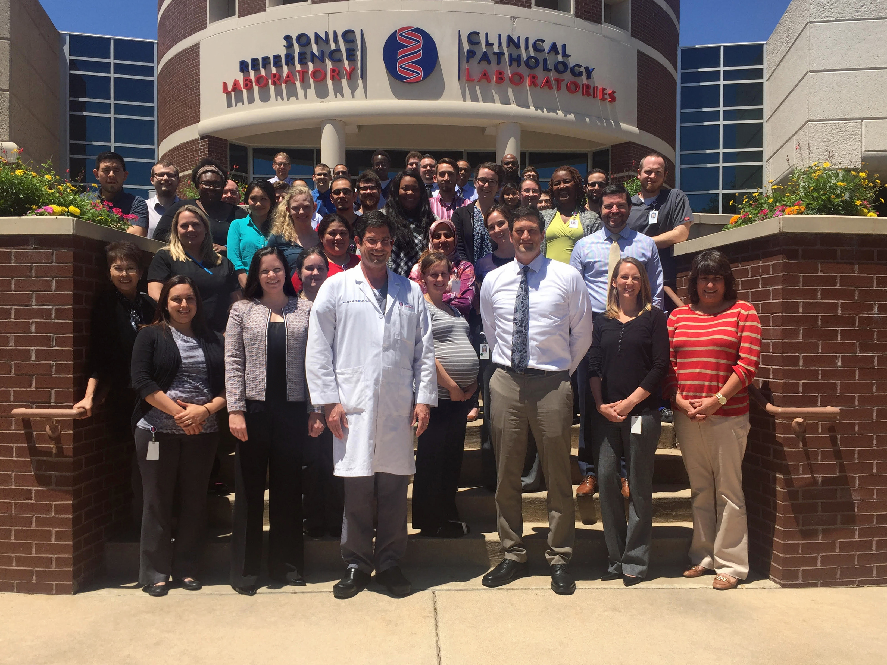

Sonic Reference Laboratory (SRL) is a CLIA certified and CAP accredited state-of-the-art esoteric reference laboratory specializing in Analytical Chemistry, Molecular, Hematology, Immunology and Clinical Chemistry testing. SRL is part of the Sonic Healthcare USA network of laboratories, which is a component of Sonic Healthcare Limited, a large global decentralized federated network of medically-led practices headquartered in Sydney, Australia.

Founded in 2014, SRL aspires to help people live healthier lives by delivering the highest quality test results utilizing cutting edge testing technologies. With a quality program based on the Quality System Essentials defined by the Clinical and Laboratory Standards Institute (CLSI), SRL aims for best practice by elevating the commitment to quality from compliance with minimum requirements to the highest achievable level.
SRL has built its quality service and reputation on test development projects that set the laboratory apart from the rest. With a dedicated team both inside the laboratory and out, SRL is setting the bar for test development. A robust and consistent project management mentality will continue to facilitate rapid test menu expansion at SRL as we strive to meet and exceed development expectations.
Development

- Clinical and technical resources from a network of Sonic laboratories throughout the world
- R&D team comprised of PhDs focused on medical and technological advances, while insuring lab efficiency and quality
- Development of new and novel tests to meet the needs of internal, external and hospital clientele
Quality & Innovation
- An internal Quality Management System derived from Clinical and Laboratory Standards Institute (CLSI) and ISO 15189
- Lean Six Sigma Continuous Improvement Initiatives led by certified Six Sigma Black Belts and Green Belts
- State-of-the-art software including continuous wireless temperature monitoring system, electronic event and document control management system and real-time metric monitoring dashboards throughout the laboratories
Actionable Results
- Enable healthcare providers to detect genetic alterations or medical conditions at treatable stages, allowing for personalized medical plans
- Clinical support from our team of qualified laboratory and medical directors to ensure providers can easily understand and articulate results
- Support from our network of account executives to ensure ordering and receiving results are clear and simple